|
Los autores
clásicos, griegos y latinos, denominaron íber-íberes a los habitantes del área
litoral mediterránea comprendida entre Andalucía y el río Hérault (Francia). Los
íberos nunca llegaron a alcanzar una unidad política; sin embargo, tenían un
rasgo común, su Cultura, que se desarrolló entre los siglos VI al I a.e.c.
Los Iberos levantinos fueron unos de los pocos pueblos que se romanizaron de una
forma pacífica, ya que tenían relaciones comerciales con los fenicios, griegos,
romanos y acuerdos militares con Roma.
Con la Cultura
Ibérica cambia la configuración del hábitat de las etapas
precedentes y la estructuración de la población. Por primera vez en
nuestras tierras se puede hablar de verdaderas ciudades que
controlan política y económicamente un territorio donde se
asientan otros núcleos de población dependientes de aquellas, de
carácter preferentemente agrícola, como las aldeas y caseríos. Este territorio
aparece defendido por fortines, dispuestos en puntos estratégicos, que aseguran
la vigilancia de las fronteras.
La existencia de ciudades, es la característica más destacable de su
organización política y social.
|
La utilización
generalizada de la metalurgia del hierro y del torno de alfarero es un claro
exponente de su alto nivel tecnológico. A su vez, el uso de la escritura, la
existencia de un sistema de pesas y medidas y, finalmente, la acuñación de
moneda expresan la complejidad alcanzada por la sociedad ibérica.
La agricultura,
junto con la ganadería, era la actividad económica fundamental de los
Iberos. Tenían una
agricultura basada en el cultivo de la vid, el olivo y el trigo. Los rebaños de ovejas y cabras
eran fundamentales para el aprovisionamiento de carne y leche, pero también para
la obtención de pieles y lana. Del cerdo se aprovechaba la carne, mientras que
el buey era, sobre todo, un animal de tiro y el caballo un animal noble para la
monta. La caza de animales silvestres, en especial el ciervo, jabalí o cabra
montés, era un complemento de la dieta, así como la pesca o la recolección de
frutos silvestres.
|
La miel era un producto utilizado desde la Antigüedad. En los
poblados ibéricos del Camp de Túria (Valencia) son muy frecuentes las colmenas de cerámica
de forma cilíndrica y estriadas en su interior, como las que proceden del Puntal
dels Llops (Olocau) y de la Monravana y el Tossal de Sant
Miquel (Llíria). Este tipo de colmenas se siguen empleando en Grecia, Chipre,
Egipto y Jordania. Y hasta hace poco tiempo, en Mallorca y
Andalucía.
Eran consideradas por los romanos de mala calidad, pues "se encienden con los calores del estío y se
hielan con los fríos del invierno" (Columela, Agricultura, IX, VI ). Se disponían
horizontalmente y apiladas sobre el suelo, cerradas con tapones de corcho,
cerámica o barro a los que se practicaba un orificio para que entraran las
abejas. Las estrías internas servían para facilitar la adherencia del panal. |
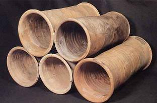 |
Los pueblos que ocupaban la geografía levantina aparecen citados en los textos
clásicos. Los Ilercavones habitaban las tierras entre el río Ebro y el
Millars, y sus yacimientos más conocidos son la Moleta dels Frares de Forcall,
el Puig de la Nau de Benicarló, el Puig de la Misericòrdia de Vinarós y Torre la
Sal de Cabanes. Los Edetanos se extendían desde el río Millars hasta el
Xúquer, destacando el Solaig de Betxí, la Punta d'Orleyl de la Vall d'Uixó, las
ciudades de Sagunt-Arse y Tossal de Sant Miquel-Edeta de
Llíria, la Carència de Turís o el Pico de los Ajos de Yátova. Los Contestanos,
con asentamientos como Xátiva-Saíti, la Serreta de Alcoi, el Tossal de
Manises de Alicante, el Monastil de Elda, Ilici- la Alcúdia de Elx, la
Escuera y el Oral de San Fulgencio, ocupaban las tierras entre el río Xúquer y
el Segura. En el resto de la península existían otros pueblos como: los
Oretanos, los Turdetanos, los Ilegertes, los Indigetes,
los Ausetanos, los Ceretanos,.....
La Cultura Ibérica es el resultado de un proceso de formación iniciado en el
siglo VIII a.e.c. con la instalación de las primeras colonias fenicias en el sur
peninsular. Desde los establecimientos costeros partirán los estímulos que
permitirán a los indígenas conocer nuevos productos y nuevas técnicas.
|
Así, por ejemplo, el cultivo de la vid, atestiguado en el Alt de Benimaquia de Dénia
desde el siglo VI a.e.c, se inició en beneficio de unas élites cada vez más
poderosas para emular los modos de vida coloniales. En los Villares de Caudete
de las Fuentes, Vinarragell de Borriana y el Torrelló de Almassora queda bien
patente la progresiva sustitución de las cerámicas hechas a mano por las
realizadas a torno. Todo ello provocará una mayor estabilidad de la
población
mediante la concentración en núcleos mayores y la consolidación de nuevas formas
constructivas. En los Saladares de Orihuela y, sobre todo, en la Penya Negra de
Crevillent el urbanismo organizado cambió por completo la fisonomía de las
anteriores cabañas del Bronce Final. |
Las excavaciones
reflejan el carácter sedentario, organizado y defensivo de los poblados
ibéricos. Los asentamientos como la Bastida de les Alcuses de Moixent, la
Covalta de Albaida, el Oral de San Fulgencio, el Castellar de Meca de Ayora, el
Puig de Benicarló o la Illeta dels Banyets del Campello, ubicados en cumbres
amesetadas o en llano, presentan un trazado urbanístico cuadrangular con grandes
viviendas, rodeadas por un recinto amurallado y con potentes torreones. Mayor
complejidad ofrecen los poblados en ladera, como el Tossal de Sant Miquel de
Llíria, el Tossal de la Cala de Benidorm o la Serreta de Alcoi, donde la
topografía condiciona la disposición de las calles y las manzanas que se escalonan a
lo largo de las pendientes. También se conocen otros tipos de hábitat, como los
pequeños poblados de calle central, los asentamientos sin fortificar o los
torreones aislados que responden a distintas funcionalidades. El descubrimiento
de edificios de varias plantas y la identificación de recintos religiosos son
sólo algunos de los aspectos más novedosos del paisaje urbanístico ibérico.
ORGANIZACIÓN
SOCIAL y POLÍTICA
Fuese el que
fuese el representante, ya sea un rey o un caudillo tribal, este siempre actuaba
como el jefe militar y única autoridad representativa.
Existía una clase noble, de grandes propietarios; otra clase era los campesinos
y mineros libres que en cierto modo estaban subordinados a los grandes señores;
y en el extremo opuesto estaban los esclavos. Dependiendo de la zona de la
península, había una mayor o menor diferencia social entre la nobleza y el
pueblo.
Una de las actividades principales de los iberos eran las guerras. Son
corrientes las noticias de matanzas colectivas, sacrificio de prisioneros y
suicidio de los vencidos. Era frecuente también el pillaje, fruto de las
diferencias sociales. Los esclavos fugitivos y los campesinos desposeídos por
los nobles se integraban en bandas que destruían cosechas y robaban ganado. los
escritores antiguos alaban el valor de los iberos, así como de la lealtad a sus
caudillos y jefes militares.
LA CASA
IBERA
Tanto la red
viaria como las viviendas se adaptaban al terreno. El modelo de construcción más
difundido es el oppidum; fortificación sobre una colina o elevación de fácil
defensa.
Los materiales empleados en la construcción de una casa eran: la tierra, la
piedra, la madera y la cal. Las casas poseían un zócalo de piedra de entre 0'5 y
1m de altura, sobre el que se alzaban las paredes de adobe. Posteriormente las
piedras y adobes se revestían con barro, se enlucían y se encalaban; e incluso
algunas casas se pintaron con tonos rojizos, verdes o azulados.
Los suelos eran de tierra apisonada y raramente de guijarros o lajas . Los
techos eran planos y consistían en un entramado de vigas y rollizos sobre el que
se disponía una densa cubierta vegetal, se han documentado improntas de tallos
de gramíneas; y finalmente, se le dotaba de una capa de arcilla o barro, a veces
mezclado con algún fragmento cerámico.
|
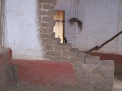 |
Las casas son de una sola planta y separadas por muros medianeros, se
organizaban en manzanas y ocupaban, cada una, una superficie que variaba entre
los 80 y 150 m2, aunque la casa del jefe del poblado seria la más grande
llegando a los 300m2. La pendiente del cerro donde se situaba el poblado obliga
a nivelar el suelo de las habitaciones mediante la construcción de muros de
contención que servían de base a las paredes y que se rellenaban con tierra y
piedras. Las habitaciones van así escalonándose a lo largo de la cumbre y las
puertas se abrían en los lugares más accesibles, condicionando la forma y la
organización interna de las casas. El poblado estaba casi siempre rodeado de
murallas y en ocasiones con torres adosadas. Sus puertas tenían llaves para
poder cerrarlas. En cada vivienda el espacio se distribuía de forma distinta,
según las necesidades y actividades de sus ocupantes, predominando el modelo de
una estancia principal y habitaciones secundarias anexas, de menores
dimensiones. |
Las casas aparecen compartimentadas en habitaciones: la zona principal, ocupa un
lugar preferente y concentra las actividades culinarias y textiles; las
despensas, en donde se almacenaban las ánforas y tinajas, se sitúan en espacios
apartados y oscuros. Otras dependencias se destinan al reposo, molienda o
talleres.
El estudio de las estructuras excavadas muestra la existencia de numerosas
remodelaciones y ampliaciones de las casas. Estas nuevas dependencias no se
comunican directamente con la vivienda original, sino que los accesos se
realizaban desde la calle.
Las manzanas de casas se disponían a uno y otro lado de la gran calle central
que recorrería prácticamente todo el poblado. De este eje principal arrancarían
las calles secundarias perpendiculares, cruzadas a su vez por otras, con
pequeñas plazas situadas en torno a elementos destacados como una cisterna. Con
el paso del tiempo y la masificación las ampliaciones en las viviendas fueron
invadiendo y reduciendo el espacio de las calles secundarias, salvo donde era
necesario mantener una anchura mínima para la circulación de los carros, de tal
forma que se han encontrado calles donde sólo era posible el paso de una
persona.
LA CERÁMICA
|
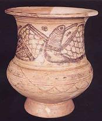 |
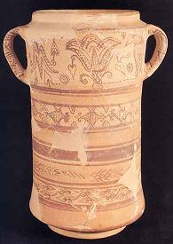
|
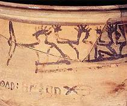 |
Los vasos
decorados con motivos geométricos, constituyen la clase más corriente de la
cerámica ibera. Los iberos tomaron este tipo de decoración de los colonizadores.
Los vasos decorados ibéricos se agrupan en dos estilos pictóricos bien
diferenciados. El estilo narrativo con escenas figuradas dispuestas en friso y
acompañadas en muchas ocasiones de textos escritos que se desarrolla en el siglo
III a.e.c.; y el estilo simbólico, caracterizado por imágenes aisladas y de
seres mitológicos en disposición central, que se desarrolla en los siglos II-I
a.e.c. En estas producciones de prestigio, realizadas en su mayoría por encargo,
destaca el papel del pintor especializado frente al alfarero. Esta división del
trabajo entre pintores y ceramistas confirma que estamos ante una sociedad
jerarquizada donde artistas o talleres trabajan para las clases altas urbanas.
Entre el material cerámico recuperado destaca la cerámica de importación fina,
como son las cerámicas áticas, tanto de figuras rojas como de barniz negro. La
cerámica de barniz rojo aparece en menor cantidad que la negra, todas ellas
correspondientes al siglo IV a.e.c.
En cuanto a la cerámica propiamente ibérica contamos con un repertorio
tipológico formado por recipientes cerámicos de cerámica fina, y por los de
cerámica de cocina. En la primera se incluyen recipientes de transporte,
almacenaje, despensa ánforas, tinajas, etc.; de servicio de mesa; platos,
escudillas, páteras, copas, y de aseo personal, o también relacionadas con
actividades religiosas y funerarias botellitas, copitas, etc. Con una decoración
pintada de carácter geométrico compuesta por bandas, filetes y círculos, que las
sitúa claramente en el Ibérico Pleno.
|
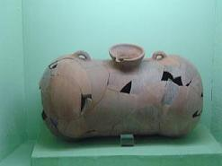 |
La cerámica de cocina se compone de
recipientes destinados esencialmente a uso culinario, encontramos las ollas
tanto grandes como medianas, las cazuelas, las tapaderas, los toneles, etc..
Las escenas
pintadas en la cerámica están dispuestas en friso y en ellas participan
siempre varios personajes, plasman actividades muy concretas de un sector de la
sociedad: la aristocracia. |
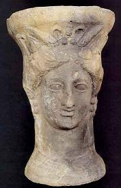 |
Muestran un mundo lúdico,
como las cacerías, y militar, donde la guerra, duelos y juegos
competitivos reflejan la importancia del caballero. Las damas entrenadas,
las procesiones y danzas reflejan el carácter festivo y religioso de estas
ceremonias colectivas donde siempre participan mujeres que, por su
atuendos y atributos, representan a damas de alto rango.
Así, las escenas de la cerámica muestran, en un contexto urbano, a la
clase privilegiada. En la base de la sociedad se encontraba el
campesinado, que no aparece reflejado en la iconografía, dedicado a la
explotación del entorno de la ciudad. |
|
|
LA ESCULTURA
Además de su
valor estético, las esculturas iberas nos presentan prácticamente la única
fuente para aproximarnos al aspecto físico de sus gentes; ya que incineraban a
sus muertos y no tenemos cadáveres para su estudio antropológico.
Es una escultura arcaica, las figuras en un principio son representadas
frontalmente, siendo rígidas, simétricas y carentes de animación, pero eso sí,
con una gran expresividad, no olvidemos que su arte y vida se vio influido por
las colonias griegas , fenicias y púnicas. Posteriormente sus obras alcanzan una
belleza y elaboración exquisitas.
|
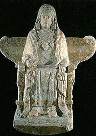 |
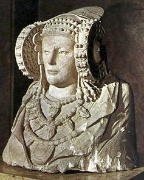 |
 |
La mayoría de
esculturas iberas datan del siglo V a.e.c hasta la romanización. La escultura ibera se
divide en dos facetas: Las estatuas de piedra de gran tamaño y las
estatuillas que se ofrecían como exvotos en los santuarios. En el levante
destacan las obras como la Dama de Elche, el Guerrero de Moixent. Los temas representados
eran las figuras humanas y de animales, ya sean reales o fantásticos. Los
materiales empleados eran la piedra, el bronce, la terracota y el hierro.
LOS METALES
Los objetos de
metal hallados son, en su mayoría, de hierro, seguidos de los de bronce y plomo
y, en menor medida, los de plata y oro.
|
Las piezas de
hierro que se han recuperado se podrían agrupar según su funcionalidad en: las
relacionadas con el armamento, entre las que destacan las falcatas, las puntas
de lanza, regatones, empuñaduras de escudos, etc.; por otro lado, todo el
material que corresponde a las diferentes actividades agrícolas,
artesanales y domésticas que se desarrollaron en los poblados, como
azadas, legones, picos, hoces, sierras, martillos, agujas, punzones,
trébedes, cuchillos, etc.; y finalmente las piezas que se podrían
clasificar como elementos propios de tareas de construcción y carpintería
como son los clavos, remaches, anillas, etc. |
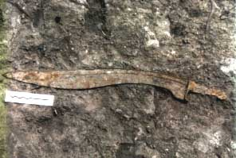 |
|
Otros
instrumentos metálicos como sierras, escoplos, taladros, chiflas, paletas
de albañil o agujas son fiel reflejo de los trabajos artesanales
relacionados con la cantería, carpintería o el curtido de las pieles. En bronce el
porcentaje es menor, destacando sobre todo a objetos relacionados con la
vestimenta: fíbulas, hebillas y botones. También piezas relacionadas con
actividades comerciales como son los numerosos ponderales y platos de balanza
aparecidos. En plomo también se han recuperado unas planchas, de forma circular,
que probablemente servían para contener las brasas en el interior de las
viviendas. En este mismo material han aparecido láminas escritas que nos
muestran la complejidad de la sociedad ibérica. Son planchas muy finas,
que suelen aparecer enrolladas, escritas por ambas caras.
En cuanto a los metales nobles es escasa su presencia en los restos
recuperados, limitándose a anillos, cadenas o collares, pendientes ....... |
|
|
LA ORFEBRERÍA
|
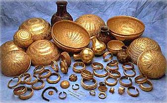 |
Los iberos eran unos
grandes orfebres.
Aunque su estilo se
vio influido por los griegos o la cultura oriental, desarrollaron su
propio estilo.
Han aparecido restos
arqueológicos, uno de los más conocido es el tesoro de Villena.
También han
aparecido otros restos arqueológicos como: vajillas de plata, anillos, cadenas o
collares, pendientes, brazaletes, vainas de puñales, etc.. |
|
|
|
EL VESTIDO
El vestido
se conoce sobre todo a través de la escultura y de la cerámica. La mujer
llevaba enaguas y túnicas largas superpuestas y ribeteadas con cenefas, un manto
largo de gruesa tela, generalmente de color púrpura, y babuchas de cuero. En sus
atuendos más solemnes cubría la cabeza con complejos tocados formados por velos,
cofias, altas mitras o diademas y se adornaba con collares de colgantes,
pendientes, pulseras y anillos.
El hombre vestía con calzón y túnica corta ceñida a la cintura y un manto largo
que se llevaba dejando el brazo derecho libre y sujeto al hombro con una fíbula.
Podían llevar pendientes, sortijas y brazaletes. Para la guerra, se protegía con
casco, clípeo pectoral sujeto con correas y grebas.
NUMISMÁTICA
Durante los
siglos V-III a.e.c se atestigua en nuestros poblados el uso de un número
reducido de monedas procedentes de Siracusa, Messana, Massalia o Emporion.
Durante este tiempo, la moneda desempeñó una función muy modesta o casi nula, ya
que los intercambios se realizaban mediante el trueque.
Las primeras monedas que se acuñaron en tierras valencianas fueron las de Arse (Sagunt), durante la segunda mitad del siglo III a.e.c., y poco después en
Saitabi (Xátiva). A partir del siglo II a.e.c y por un breve periodo de tiempo,
se unirá a estas ciudades la producción de los talleres de Kelin (Los Villares
de Caudete de las Fuentes) y Kili (¿La Carencia, Turís?). La Segunda
Guerra Púnica, que enfrentó a romanos y cartagineses, será una causa muy
importante de la difusión del uso de la moneda, pues puso en circulación una
enorme cantidad de ellas para cubrir los gastos originados por la guerra, como
el sueldo, stipendium de los mercenarios iberos. Arse y Saitabi fueron
los centros emisores más importantes, con una voluminosa producción durante los
siglos II-I a.e.c. Ambas acuñaron plata,
exceptuando Arse, se orientaron hacia la acuñación de moneda de bronce
ases y divisores, es decir, hacia la moneda utilizada en las pequeñas
transacciones. Paralelamente a estas acuñaciones de las cecas ibéricas, se
acuñaron también tres emisiones de monedas de bronce en la recién fundada ciudad
romana de Valentia.
|
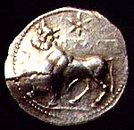 |
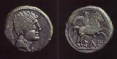 |
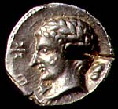 |
En el mundo ibérico la validez de las monedas no estuvo limitada al territorio
de la población que las emitió, siendo igualmente utilizadas y aceptadas en
otras ciudades. Durante los siglos II-I a.e.c, la población ibérica valenciana
utilizó monedas con una procedencia muy diversa. Las monedas de bronce emitidas
en las ciudades valencianas ocuparon un porcentaje en torno a la mitad; el resto
procedía de Roma y de otras ciudades ibéricas como Cástulo, Ikalesken, Bolskan y
Kelse. Las necesidades de moneda de plata se cubrieron, en parte, con la
producción de Arse, pero, sobre todo, con moneda de Roma y de otras cecas
peninsulares.
LENGUA y
ESCRITURA
Ninguna de las
inscripciones conservadas es anterior al siglo V a.e.c. Se han encontrado sobre
piedras, plomo, monedas y cerámica.
La escritura ibera era semisilábica en un momento en el que dominaban en el
mediterráneo las escrituras alfabéticas.
La trascripción de los signos ibéricos fue lograda hace años, gracias a los
nombre iberos que aparecían en inscripciones latinas y epígrafes de monedas.
Aunque no se ha podido traducir la escritura ibérica.
Entre los distintos sistemas utilizados es el área de Levante la que ofrece
mayor riqueza y variedad de inscripciones. Utiliza 28 signos y su uso estuvo muy
generalizado.
|
El ibérico es una
lengua preindoeuropea y se inscribe dentro de la unidad lingüística
mediterránea, lo que justificaría ciertas semejanzas y un parentesco común con
el bereber, el sardo, el etrusco o el vasco, ésta última, la única lengua
peninsular preindoeuropea. Es a partir del siglo IV a.e.c cuando empiezan a
manifestarse en nuestro territorio signos palpables del desarrollo de la
escritura.
Los signos de la escritura ibérica proceden del Mediterráneo oriental, de
los alfabetos fenicio-griego, pero adaptados a los valores fonéticos
propios de la lengua ibérica, resultando, por tanto, un alfabeto original semisilábico. El desconocimiento de la lengua que hablaban los íberos
impide que se puedan traducir sus textos, aunque ya se conocen relaciones de
nombres propios, marcas de alfareros, signos de propiedad, etc. |
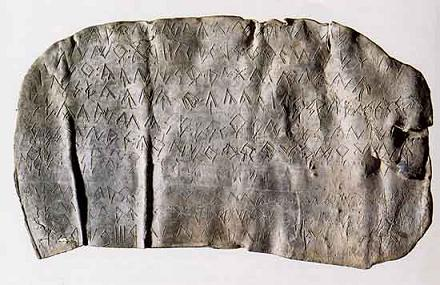 |
Estos documentos
aparecen escritos en tres alfabetos distintos: el alfabeto meridional, que ocupa
la parte oriental de Andalucía, las tierras de Albacete, Murcia y Alicante; el
alfabeto oriental, que se extiende por toda la costa este peninsular, y el
alfabeto jónico que se limita a la comarca de Alcoi y parte de la costa
alicantina.
La fuente de información más importante son los plomos escritos, pues, aunque no
se pueden traducir, muchos de ellos son listados asociados a cantidades, es
decir, archivos y cuentas administrativas. En la actualidad se han documentado
más de cuarenta plomos, entre los que destacan las series aparecidas en
yacimientos como la Serreta de Alcoi, la Punta d’Orleyl de la Vall d’Uixó, Los
Villares de Caudete de las Fuentes, la Bastida de les Alcuses de Moixent o el
Pico de los Ajos de Yátova.
La vertiente narrativa de la escritura ibérica aparece hacia fines del siglo III
a.e.c, cuando los mismos artistas que pintan escenas figuradas en las cerámicas,
explican los acontecimientos, escriben fórmulas dedicatorias o firman sus obras.
De carácter eminentemente urbano, esta artesanía también permite asociar la
escritura al desarrollo de las ciudades y de las aristocracias urbanas.
RELIGIÓN y NECRÓPOLIS
Es difícil
explicar como era la religión de los iberos, no tenemos documentos que nos
hablen de ella. En el Levante y en la región sudoriental han aparecido
santuarios. En el resto del mundo ibérico seguramente los lugares de culto,
estarían situados dentro de los poblados.
El panteón ibero aceptó divinidades exóticas orientales y posteriormente griegas
y romanas.
Uno de los cultos más venerados eran a las diosas de la fertilidad, también
aparecen diversas diosas aladas representadas en vasos cerámicos. Aparecen
asociadas con el culto al mundo subterráneo, como serpientes.
|
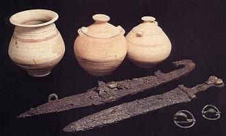 |
Otros cultos mediterráneos como el toro estaban muy arraigados en el levante.
También han aparecido culto solares y lunares.
El ritual funerario generalizado en los iberos fue la incineración. Las cenizas
se colocaban en una urna y se rodeaban de ofrendas: vasos, armas y otros
objetos. Los iberos
incineraban a sus muertos, proceso durante el cual se quemaban hierbas
aromáticas. Las cenizas eran recogidas cuidadosamente y depositadas en un loculus
con o sin urna. Junto a los restos del incinerado se enterraba su ajuar,
compuesto por elementos indicativos de su status social, como cerámica de
lujo, armas, herramientas, etc.; objetos personales como fíbulas o cuentas
de collar, y, en algunos casos, figurillas, amuletos y ofrendas
alimenticias. Diversas ceremonias podían celebrarse durante las exequias,
como libaciones, juegos funerarios, desfiles, cortejos y banquetes. |
En las necrópolis
o cementerios ibéricos, las tumbas más comunes eran simples hoyos cubiertos por
un montículo de tierra o piedras. Las tumbas más
complejas eran túmulos de piedras o adobes, pilares-estela o monumentos
turriformes. Las tumbas son siempre anónimas y sólo después de la conquista
romana se utilizarán lápidas funerarias escritas como la de Sinarcas.
Además de en las necrópolis, la vida religiosa de los iberos se manifiesta
también en lugares de culto específicos. Desde la más remota prehistoria
perviven creencias telúricas, es decir, asociadas a la naturaleza, cuyo reflejo
se constata en época ibérica por los depósitos efectuados en las cuevas. Estas
cuevas-santuario proporcionan conjuntos de materiales entre los que destacan
numerosos vasos caliciformes y platitos empleados como lucernas o como
recipientes para libaciones, caso de los encontrados en la Cueva del Puntal del
Horno Ciego (Villargordo del Cabriel, la Plana de Utiel).
Una de las manifestaciones funerarias mejor documentada en los últimos años son
los enterramientos infantiles hallados en las casas ibéricas, como los del
Castellet de Bernabé (Llíria, el Camp de Túria). Los recién nacidos y criaturas
de pocos meses estaban apartados de la tradición y del espacio funerario de los
adultos. No eran incinerados y enterrados en las necrópolis, sino que sus
cuerpos eran inhumados bajo el suelo de las casas. Estos hechos hacen sospechar
de la existencia de ritos de paso en función de la edad sin los cuales los
difuntos no se convierten en miembros de pleno derecho en la sociedad. En
algunas ocasiones existen indicios que estos hallazgos infantiles eran
sacrificios fundacionales o de amortización.
Los santuarios, a menudo alejados de los poblados, se asocian a cultos
colectivos posiblemente destinados a reforzar la identidad tribal, en los que se
depositan exvotos de terracota, como los de la Serreta de Alcoi, o de piedra y
bronce que representan oferentes o animales, como los del Cigarralejo de Mula
(Murcia) o Despeñaperros (Jaén). Los templos de la Illeta dels Banyets del
Campello, del Tossal de Sant Miquel de Llíria o de l’Alcúdia d’Elx, así como la
existencia de capillas domésticas dentro de los asentamientos, muestran la
complejidad del mundo religioso de los iberos.
YACIMIENTOS
Aquí os
mencionamos algunos de los yacimientos iberos de la Comunitat Valenciana.
La Moleta del
Frares en Forcall, Alcala de Xivert, La Balaguera en Pobla de Tornesa, Borriol,
La Torre de Mal Paso en Castellnou, Rotxina en Sot de Ferrer, Sagunt (Arse),
Sant Miquel (Edeta) en Lliria, La Monravana en Casinos, La Querencia en Turis,
Cullera, Xàtiva (Saltabi), Cova Alta en Albaida, La Bastida de les Alcuses en
Moixent, La Serreta en Alcoi, El puig en Alcoi, El Xarpolar en Alcala-margarida,
El Montgo en Denia, Ifac en Calpe, El Tossal de la Cala en Benidorm, El Tossal
de Manises en Alicante, L´Alcúdia en Elche, El Molar en la
Marina, Cabezo Lucero en San Fulgencio, El Puntal en las Salines............
El
Puntalet y el Collado de la Cova del Cavall, Llíria,
se corresponden a sendos espolones del cerro ocupado por el poblado del Tossal
de Sant Miquel. En 1947 se excavaron dos áreas de enterramientos datadas entre
finales del siglo VII y mediados del VI a.e.c. Los restos de cinco
incineraciones se encontraron en el interior de urnas, hechas tanto a mano como
a torno, una de las cuales era una tinaja fenicia con decoración pintada. Los
ajuares que las acompañaban eran escasos.
De igual manera, en el Boverot, Almassora, se localizaron
en 1932, en unos hoyos excavados en la tierra, dos urnas hechas a mano que
contenían restos de incineraciones. Por su tipología se fechan dentro del Bronce
Final, en el siglo VIII a.e.c, inmediatamente antes de la llegada de las
influencias coloniales. Estos enterramientos debían formar parte de una
necrópolis de cronología más amplia, asociada al cercano asentamiento del
Torrelló (Almassora).
Los Villares, Caudete
de las Fuentes, es un buen ejemplo de ciudad ibérica.
Conocida en época ibérica como
Kelin, es el asentamiento más grande de la
comarca.
|
Las excavaciones, que se están llevando a cabo desde 1956, muestran la
evolución del hábitat desde el siglo VII a.e.c hasta su decadencia y abandono
entre los años 83 y 77 a.e.c. Situado en el cruce de caminos entre la costa y la
Meseta y entre ésta y Teruel, canalizaba y distribuía los productos comerciales
convirtiéndose en el lugar central del que dependerán los demás poblados de la
zona. En el sector excavado se distingue un trazado urbano de grandes casas
compartimentadas y abiertas a calles que permitían la circulación de carros. Su
categoría de ciudad viene avalada por su extensión de 10 hectáreas, la variedad
de productos agrícolas, los plomos escritos y la acuñación de moneda. |
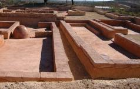 |
La necrópolis de incineración de la Solivella, Alcalà de Xivert,
datada entre el siglo VI y la primera mitad del siglo V a.e.c,
que se excavó en 1961 localizándose 28 sepulturas dispuestas en hoyos. Toda la
cerámica recuperada era de producción local, hecha a torno, y los ajuares que
acompañaban a las urnas que contenían los restos incinerados del muerto estaban
compuestos por objetos metálicos de adorno personal y armamento.
La necrópolis de Altea la Vella, Altea, descubierta
en 1972, en la que se encontraron incineraciones con un escaso ajuar metálico
compuesto básicamente por broches de cinturón y objetos de adorno. Todas las
vasijas cinerarias son urnas de orejetas, piezas características del Horizonte
Ibérico Antiguo, es decir, los siglos VI-V a.e.c.. Una de las tumbas estaba
señalada con una estela en la que aparece grabado un guerrero vestido y armado.
La Bastida de les Alcuses, Moixent, fue excavada inicialmente
entre los años 1928 a 1931. Es un poblado contestano cuya vida duró escasamente
100 años, siendo destruido violentamente en la segunda mitad del siglo IV a.e.c.
Está situado estratégicamente entre la vía natural que comunica la costa
con la Meseta, conocida en época romana como la Vía Augusta, y el curso
del río Vinalopó que conduce hacia las tierras alicantinas. El recinto amurallado,
que delimita una extensión de 6 hectáreas, tiene cuatro puertas, una de
ellas tapiada, y conserva tres torres. En su interior, el trazado
urbanístico se organiza en manzanas de grandes viviendas dispuestas a
ambos lados de una larga calle axial.
Los plomos con
escritura ibérica, la figurilla del "Guerrer de
Moixent", la colección de cerámicas griegas o el conjunto de instrumentos
agrícolas y artesanales son sólo algunos de los hallazgos más destacados de
entre sus ajuares.
En
la Seña,
Villar del Arzobispo, y en el Castellet de
Bernabé, Llíria, se hallaron balsas de decantación
encaladas que contenían huesos de aceituna carbonizados, prueba de la existencia
de una producción de aceite antes de la llegada de los romanos. El aceite se
utilizaba en la preparación y conservación de los alimentos, la iluminación y la
elaboración de ungüentos. En el proceso de su elaboración, las aceitunas se
colocan en cofia de esparto apilados sobre aras de piedra que se prensan
mediante una viga de madera maniobrada gracias a un contrapeso en su extremo. El
líquido resultante circula por los canalillos y cae en una balsa de
decantación donde flota el aceite depurado. Este aceite depurado se recoge en un
segundo recipiente mientras que el agua y las impurezas permanecen en la primera
balsa.
El Corral de
Saus, Moixent, necrópolis excavada a lo largo de la
década de los 70, proporcionó dos grandes monumentos de empedrado tumular,
conocidos como la tumba de las Damitas y de las Sirenas, y más de
15 cremaciones en hoyo. Entre los ajuares depositados destaca la cerámica
ibérica, cerámicas importadas con fechas que oscilan desde el siglo V al I
a.e.c, elementos metálicos, objetos de pasta vítrea, terracotas y huesos
calcinados, testimonio de las cremaciones. A la fase más antigua de esta
necrópolis, de los siglos VI-V a.e.c, corresponde un monumento funerario que se
ha podido reconstruir como un pilar-estela gracias a los restos escultóricos y
arquitectónicos reutilizados en las estructuras tumulares de una fase más
tardía, de los siglos III-II a.e.c.
Los elementos que formarían el monumento tipo pilar-estela del Corral de Saus
son: base escalonada, pilar cuadrado, gola con nacela y baquetón y, a modo de
remate, una escultura zoomorfa sobre pedestal con una altura aproximada entre
dos y tres metros. Estos monumentos, que datan entre los siglos VI y IV a.e.c,
se conocen en las necrópolis de Pozo Moro en Chinchilla (Albacete) y de Montfort
del Cid (Alicante); Coimbra del Barranco Ancho y El Prado en Jumilla, Fuentecica
del Tío Garrulo en Coy-Lorca, Los Nietos en Cartagena y El Cigarralejo en Mula,
todas las últimas en la región de Murcia.
En la necrópolis de las Peñas, Zarra, se han excavado 20 incineraciones
datadas entre los siglos V y IV a.e.c. La mayor
parte de las tumbas son hoyos simples de planta circular o rectangular con una
capa de piedras en la base o en uno de los laterales. Sólo cuatro sepulturas se
encontraron delimitadas por muretes de piedra, a modo de cista o encachado.
Excepto en dos casos, los hoyos contenían una urna cineraria en cuyo interior se
habían depositado los huesos calcinados del difunto y algún objeto metálico de
pequeño tamaño. Los demás elementos del ajuar, tales como armas, recipientes y
cuentas de collar, se colocaron alrededor de la urna cubriéndose el conjunto con
las cenizas y carbones procedentes de la incineración.
La presencia de armas es abundante entre los ajuares de las tumbas, como también
podemos ver en la necrópolis de Casa de Monte (Valdeganga, Albacete),
confirmando el papel destacado de la ideología guerrera entre las capas altas de
la sociedad. Ello coincide con las escenas de combate que vemos pintadas en los
vasos del Tossal de Sant Miquel de Llíria o de la Serreta de Alcoi, y que
muestran una jerarquía militar: los jinetes, provistos de espuelas y cascos con
penachos, parecen tener el mando sobre una infantería equipada con coraza, casco
simple y escudo redondo (caetra) o alargado (scutum). Las armas de los
personajes montados son preferentemente el soliferreum, lanza de hierro de una
pieza, o el pilum, asta de madera provista con punta y contera de hierro. Los
caballos llevaban frontaleras y campanitas propiciatorias. Los infantes combaten
con falcatas, espadas de un solo filo y empuñadura cubriente, o espadas rectas
de doble filo y empuñadura de frontón o antenas.
El Tossal de Sant
Miquel,
Llíria,
inicialmente excavado entre los
años 1933 y 1953, es conocido sobre todo por su colección de vasos decorados y
por los textos escritos que acompañan estas decoraciones, constituyendo el mayor
archivo epigráfico ibérico. La ciudad, identificada con Edeta por el geógrafo
Estrabón, ocupó en su momento de máximo esplendor, entre los siglos IV al II
a.e.c, más de diez hectáreas, extendiéndose prácticamente por todo el cerro.
Presenta un trazado urbanístico propio de los poblados en ladera donde las
edificaciones se disponen, adosadas a la pared rocosa, a lo largo de terrazas
artificiales. Su aspecto escalonado se acentúa al tener las viviendas varias
plantas y cubiertas planas. En el siglo II a.e.c, después de la conquista
romana, fue destruido e incendiado, cayendo, a lo largo de ese siglo y el
siguiente, en un gradual abandono. A partir del siglo I de nuestra era, la
ciudad romana, construida ahora en el Plá de l'Arc, volverá a vivir una nueva
etapa de esplendor.
Las investigaciones más recientes realizadas en torno a Edeta-Llíria muestran
que esta ciudad ejercía la capitalidad de un territorio extenso y bien
delimitado. En el área comprendida entre la sierra Calderona al norte y el río
Túria al sur, la llanura costera al este y por el interior la zona montañosa de
la Serranía, se desarrolló, a partir del 400 a.e.c., un poblamiento
estructurado en cuatro categorías de asentamientos: las aldeas y caseríos
proporcionaban los productos básicos de la subsistencia, mientras que los
fortines vigilaban el territorio; finalmente, la ciudad de Edeta era el centro
rector y beneficiario de este complejo sistema, reflejo de una sociedad
fuertemente jerarquizada.
 |
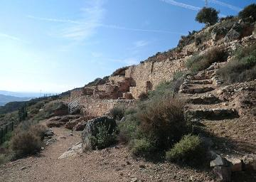 |
 |
Las aldeas y caseríos eran poblados encargados de la explotación agrícola del
territorio edetano. Con casi una hectárea, la Monravana de Llíria, la Torreseca
de Casinos o la Seña de Villar del Arzobispo eran aldeas ocupadas por un
campesinado encargado de abastecer a la ciudad; mientras que los caseríos, como
el Castellet de Bernabé de Llíria, eran fincas de 1.000 m2 en las que
el terrateniente organizaba la explotación del entorno inmediato. Su ubicación
y la presencia de estructuras de
transformación de productos agrícolas, como lagares y almazaras, reflejan su
adaptación a las actividades agropecuarias. Los muestreos carpológicos confirman
la práctica de un policultivo basado en la trilogía mediterránea: cereal, olivo
y vid. La cabaña ganadera asociada a estos cultivos de secano presenta un alto
porcentaje de ovicápridos, donde dominan las cabras. La caza del ciervo, el
jabalí y la cabra montés no sólo sirvió para completar la dieta alimenticia,
sino que fue, como muestran los vasos pintados, una actividad lúdica
desarrollada por las clases dirigentes.
La Seña, Villar del Arzobispo, es una aldea amurallada de unos
8.000 m2 de superficie ubicada en pleno llano, en la que las
excavaciones han descubierto una almazara, un sector de viviendas adosadas a la
muralla y una secuencia estratigráfica fechada desde el siglo VI hasta el siglo
II a.e.c.

El poblado de la Monravana, Llíria,
de 6.000 m2, conserva todo su recinto amurallado y en el
interior, además de los sectores de viviendas, destacan en el extremo norte dos
lagares e instalaciones destinadas a la molienda. La almazara y los lagares de
estos dos poblados confirman, pues, la importancia de la producción del vino y
del aceite antes de la llegada de los romanos.
El Castellet de Bernabé, Llíria, de unos
1.000 m2 ubicado al pie del fortín dels Tres Pics, en las
estribaciones de la sierra Calderona. Construido a inicios del siglo IV a.e.c se
destruyó violentamente a principios del siglo II a.e.c. Presenta un trazado de
calle central que separa dos sectores bien diferenciados: una gran vivienda con
pasillo y cinco habitaciones donde residiría el propietario y su familia; y un
sector con departamentos destinados al almacenaje, molienda de cereales, una
herrería o forja y una almazara, todas con dos alturas. La herrería, una
habitación con un banco de trabajo rodeado de deshechos de hierros y numerosas
escorias de fragua, indican una intensa actividad siderúrgica en el poblado,
donde también hay testimonios de un taller de fundición de plomo, con un horno,
una leñera, una piedra utilizada como yunque y una olla tosca para fundirlo.

Hacia el 400 a.e.c. se construyó en torno a Edeta una red de fortines que
delimitaba sus fronteras. Estos fortines son asentamientos de pequeño tamaño
entre 500 y 4.000 m2, amurallados y con torre, construidos en lugares
de difícil acceso y con amplia visibilidad. Están situados en la entrada de los
caminos naturales que comunican el Camp de Túria con el valle del Palància y con
la comarca de la Serranía, así como a lo largo del río Túria. Todos ellos están
conectados visualmente entre sí y con el lugar central, Edeta, lo que les
permitía comunicarse ante cualquier peligro. Esta red defensiva, símbolo del
poder edetano, fue desmantelada a principios del siglo II a.e.c, cuando la
dominación romana empezó a ser efectiva.
El Puntal dels Llops, Olocau, El Puntal dels Llops, Olocau, era una
atalaya ibera dependiente de Edeta, encargada de la defensa y control del
territorio. Situado en un punto estratégico dominando el Camp de Túria y la
entrada del paso natural del barranco del Carraixet. Está delimitado por una
muralla en cuyo extremo norte se alza una torre de vigilancia, de planta
cuadrangular. En su interior había 17 viviendas distribuidas a ambos lados de
una estrecha calle. Data de finales del siglo V a.e.c, y fue destruido y
abandonado a principios del siglo II a.e.c. durante la Segunda Guerra Púnica por
las tropas de Aníbal.
En el término municipal se han encontrado restos de la Edad de los Metales, del
Bronce, iberos y romanos. De época romana se conserva parte del acueducto, el
Arquet; los hornos al pie del Puntal, en la partida de la Pedra Grossa; y villas
en las partidas de Pitxiri.

|
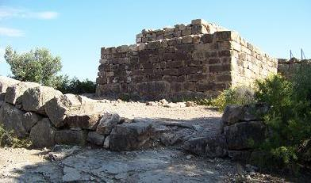 |
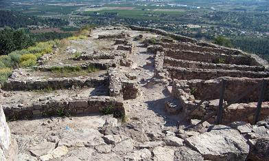 |
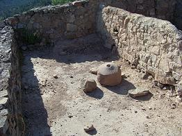 |
El yacimiento de Tos Pelat de Moncada data del siglo V a.e.c. Situado
estratégicamente, fue descubierto en 1920.
El poblado cuenta con una doble muralla, y pudo albergar a unos 600 habitantes.
Destaca el descubrimiento de restos de cerámica ática (Atenas) fechada en el
siglo V a.e.c. Se trata de copas decoradas con escenas mitológicas y ánforas
púnicas. De época ibera destaca las elaboradas decoraciones acabadas en
palmetas, círculos, dientes y otros.
 |
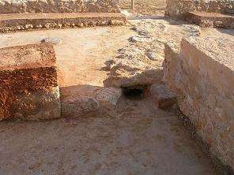 |
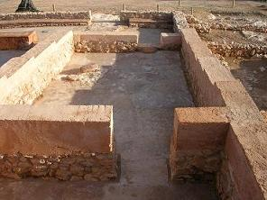 |
La Carencia se localiza en Turís. Ciudad ibérica que data del siglo IV
a.e.c perviviendo en época romana hasta el siglo II. El poblado se localiza a
3km Turís. El poblado estaba amurallado. Se asocia con la antigua ciudad
de Kili.
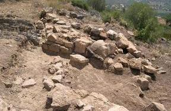
El yacimiento de Cinto Mariano se localiza al pie de un abrigo rocoso
abierto en la margen izquierda del río Magro, a unos 4 km de Requena. Data del
siglo IV a.e.c. Se asocia con un lugar de pastoreo.
La Lloma de Betxi se localiza en Paterna. Datado en la Edad del Bronce,
1800 y el 1300 a.e.c. Se conserva los restos de una gran edificación con tres habitaciones y un
pasillo lateral, y muros de piedra que conservan una altura entre 1 y 2’5
metros. El incendio que lo destruyó, favoreció la conservación de su ajuar
doméstico compuesto por cerámica, hoces de madera y sílex, molinos de mano,
objetos metálicos, contrapesos de telar y botones de marfil. Su distribución
señala diversas áreas de actividad, el almacén, la zona de molienda y el telar.
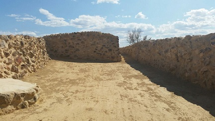
El yacimiento del
Molón se localiza en Camporrobles, es un poblado
prerromano fortificado , datado en los siglos VII-I a.e.c. Se visitan diversas
construcciones, obras defensivas y tres cisternas.
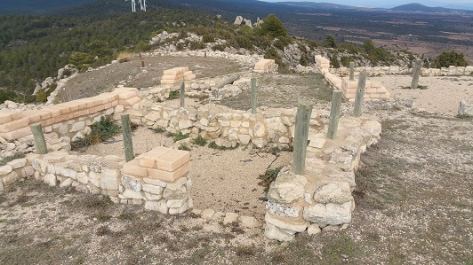
Castellar de Meca, ciudad ibérica amurallada localizada en Ayora. Cuenta
con unas vías de acceso únicas. Se trata de una red de caminos de más de 2 km de
longitud tallados en la roca y acondicionados para la circulación de carros.
Data de los siglos V-II a.e.c.

El yacimiento de Perengil se localiza en Vinaros. Conserva una torre de
defensa de época ibérica.
El yacimiento de Puig de la Misericordia también se localiza en Vinaros.
Es un pequeño asentamiento ibérico fortificado de carácter residencial y
agrícola.
El Puig de la Nau se localiza en Benircarló. Poblado ibérico del siglo V
a.e.c. Conserva la estructura urbana definida por calles, casas, talleres.
Destaca la excelente conservación con paredes de las viviendas que alcanzan los
dos metros de altura, y las murallas.
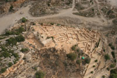
Más info sobre los Iberos:
Ciudad ibero_romana de
Cabezo de Alcalá
www.museuprehistoriavalencia.es/web_mupreva/ruta_ibers/
http://www.contestania.com/
http://www.iberosenaragon.net/
http://www.mac.cat/cat/Rutes/Ruta-dels-Ibers
http://www.viajealtiempodelosiberos.com
|